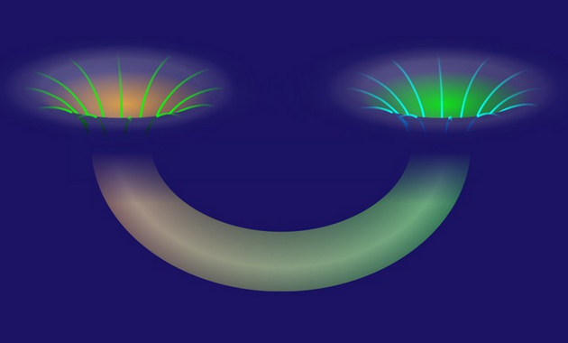

Today’s Topic¶
Yesterday was all about the basic chunk of quantum information, called a qubit. We learned about how quantum computers do things to qubits using quantum gates, like the X, Z, and H gate from the Scratch activity.
Today will be all about what happens when there are two qubits.
As we’ll see, the quantum world becomes much, much stranger when we have two qubits!
Entanglement¶
We’ve previously talked about entangelement in a general sense in ‘Spooky Action at a Distance”. Entangled particles know each other’s properties, even when separted by large distance (such as entire galaxies!). IF you take two entangled coins, put one of them on a rocketship at take it all the way out to Pluto, it will make no difference. If you spin the coin on Earth and have it come up “tails”, the coin on Pluto will always come up “heads”. Entangled particles use the spookiness of quantum mechanics to make it seem like they know each others’ secrets. It’s very spooky!
We’ve seen that if we have one qubit, we can represent its ‘state’ as \(|0\rangle\) or \(|1\rangle\). But what happens when there are two qubits? There are now a total of 4 choices for the state of this joint system consisting of both qubits!
Both qubits can be in the \(|0\rangle\) state: we write this as \(|00\rangle\).
Or, they can be in opposite states: we call this \(|01\rangle\) or \(|10\rangle\).
Or, both qubits can be in the \(|1\rangle\): we write this as \(|11\rangle\).

But remember that qubits can be in superpositions of states: in a superposition, the output of measuring a qubit is random. What happens with entangled states is similar: the outcome of measuring the first state is random, but the second measurement (of the second qubit) will depends entirely on the result of the first measurement. This is because the second qubit will know something about the properties of the first. This spooky knowledge is what allows the measurement of the second qubit to be not random at all.
An example of an entangled state is a superposition of the \(|00\rangle\) and \(|11\rangle\) states. Here, the first and second qubits are both 0 or 1 with 50% chance. If a measurement of of the first qubit gives a 0 value, then the second qubit must also be measured as 0 (in fact, scientists have proved this!).
There are several possibilities for entangled states, called Bell states.
They are:
\(|00\rangle\) and \(|11\rangle\)
\(|01\rangle\) and \(|10\rangle\)
In the first case, the measurements will be correlated. In the second, they will be uncorrelated. Take a second to think about this, and feel free to ask for help if you need it. Make sure you understand what is going on before moving on to the next activity.